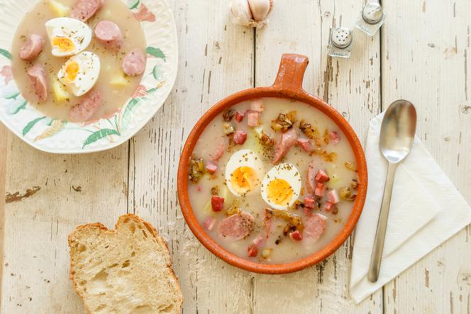
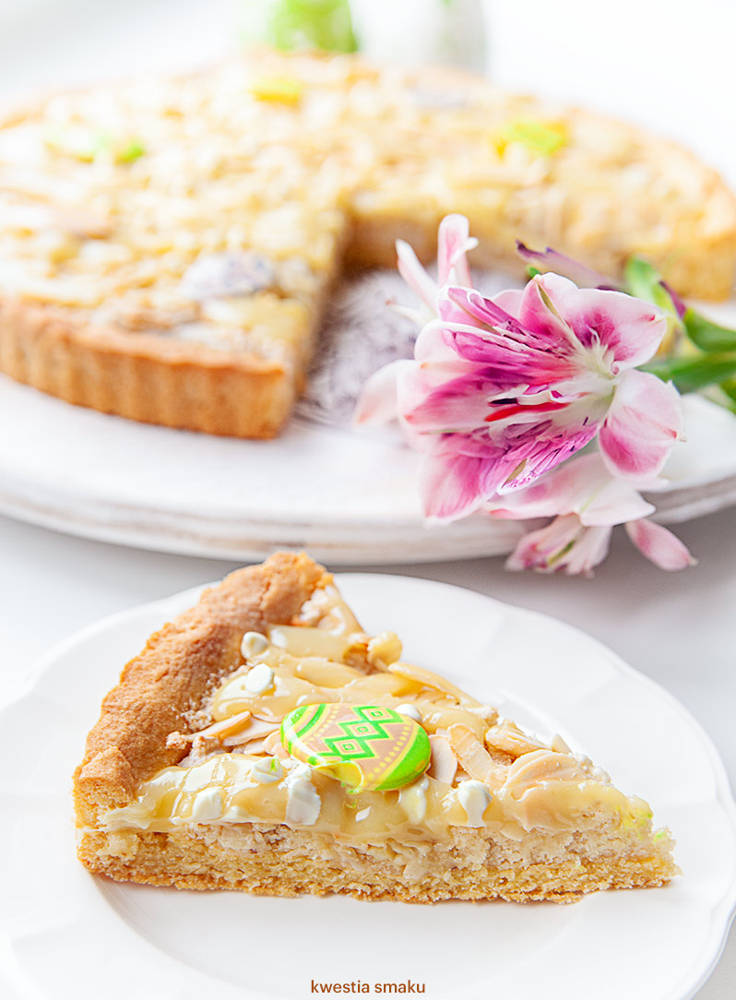

Święcenie pokarmów: Wielkanocne śniadanie to tradycyjnie czas, gdy katolicy święcą pokarmy, które zostaną spożyte w czasie Wielkanocy. Najczęściej święci się jajka, chleb, mięso, sól i inne produkty.
Wielkanocne poranki: W wielu domach tradycją jest zbieranie się rodziny na wspólną mszę poranną, a następnie spożywanie uroczystego śniadania wielkanocnego.
Malowanie jajek: Malowanie i dekorowanie jajek wielkanocnych jest popularną tradycją, symbolizującą nowe życie oraz zmartwychwstanie Chrystusa.
Potrawy Wielkanocne
Żurek: Zupa na bazie zakwasu, często podawana z białą kiełbasą, jajkiem i chrzanem.

Babka wielkanocna: Tradycyjne ciasto drożdżowe z bakaliami lub rodzynkami, często ozdobione lukrem i kolorowymi posypkami.
Baranek wielkanocny: Pieczona lub gotowana mięsna potrawa, zazwyczaj z baraniny, symbolizująca ofiarę Chrystusa.
Mazurek: Tradycyjne polskie ciasto wielkanocne, składające się z kruchego ciasta pokrytego różnorodnymi nadzieniami, takimi jak maku, orzechy, bakalie czy dżem.

Zwyczaje Wielkanocne
Szukanie jajek: Dzieci często biorą udział w zabawie, polegającej na szukaniu kolorowych jajek ukrytych przez dorosłych w ogrodzie lub w domu.
Wielkanocne święcenie stołu: Przed wielkanocnym śniadaniem stołowi przygotowanemu dla gości przypisuje się szczególną rolę. Znajdują się na nim święcone potrawy oraz tradycyjne elementy dekoracyjne, takie jak świeczki czy palma wielkanocna.
Obmywanie stóp: W niektórych regionach istnieje zwyczaj obmywania stóp bliskim osobom, co symbolizuje akt pokory i miłości względem innych, nawiązując do gestu Chrystusa, który obmył stopy swoim uczniom.